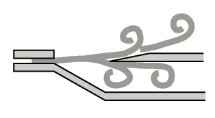

Edge Tone
|
When air is directed at an edge, it does not
divide smoothly, but tends to move to one
side and form a swirl or
vortex. Predisposed
toward vortex formation
by the flow through the
slit, the resulting
undulating flow may take the stream
below the edge. As noted below, the behavior of an edge which is associated with a pipe is quite different from that of a free edge. |

|
The pressure created by this
interaction with the edge feeds back to the area of the slit, tending to push the stream upward. The reverse happens when the stream moves to the top side of the edge and then the process repeats itself. As a
result, a periodic flipping of the airstream from side to side can
produce a sound called an edge tone. More efficient edge tone instruments can be created by coupling a slit, an edge, and an air column. When such an instrument has been produced, the frequency is determined primarily by the air column resonant frequencies which will control the rate of oscillation of the air across the edge. The edgetone effect in such an instrument serves to help initiate and sustain the tone, and can help make the transition to a higher harmonic of the air column.
The difference between the "edgetone" as envisioned in the sounding of a flute, recorder, organ pipe, etc. and the tones produced by directing air over an edge which is not coupled to an air column has been a subject of considerable discussion and investigation. Benade comments "Until recently there has been a tendency ... to confuse the sounds produced by blowing a narrow air jet against a sharp edge when the edge forms part of a flute or an organ pipe (air reed behavior) with those produced when the system is run in isolation (edge-tone behavior). In the latter case a type of repetitive eddying called vortex shedding takes place on alternate sides of the air jet, and a sound is produced if a sharp edge is used to separate the two sets of vortices. Vortex phenomena have only a secondary influence on flute-type sound production; moreover, at ordinary musical blowing pressures the edge-tone frequencies are so high as to be nearly inaudible.
Some of the literature which addresses the differences between the free edgetones and the behavior of the edges in flutes and organ pipes:
- Coltman, John W., "Sounding Mechanism of the Flute and Organ Pipe", J. Acoust. Soc. Am. 44 (1968)
- Fletcher, N. H., "Nonlinear Interactions in Organ Flue Pipes," J. Acoust. Soc. Am. 56 (1974)
- Bouasse, H., Instruments a' Vent, 2 vols., Paris: Librairie Delagrave, 1929,1930.
- Cremer, L. and Ising, H., "Die selbsterregten Schwingungen von Orgelpfeifen," Acustica 19, 143-153,(1968)
- Elder, S. A., "Edgetones versus Pipetones," J. Acoust. Soc. Am. 64, 1721-1723, (1978)
|
Index
Woodwind instruments
Musical instruments
References
Benade
Sec 22.6, p492 |